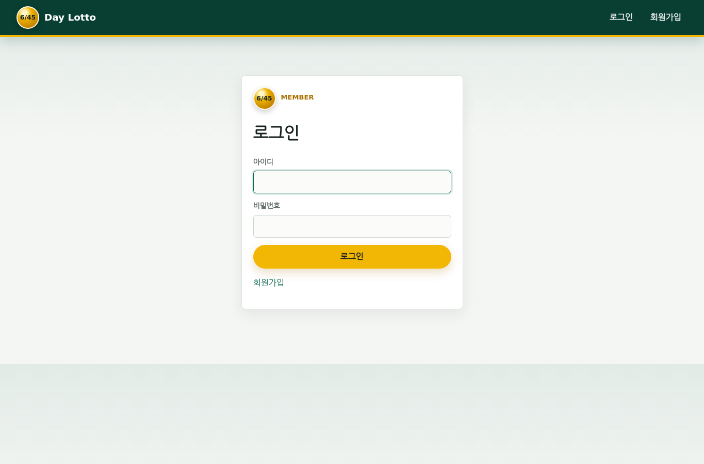
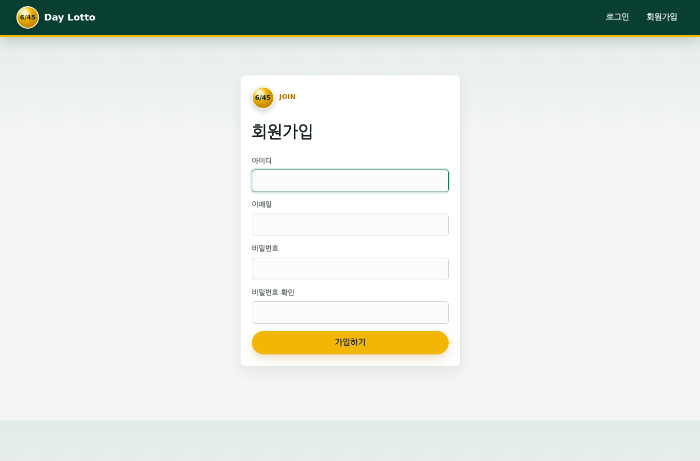
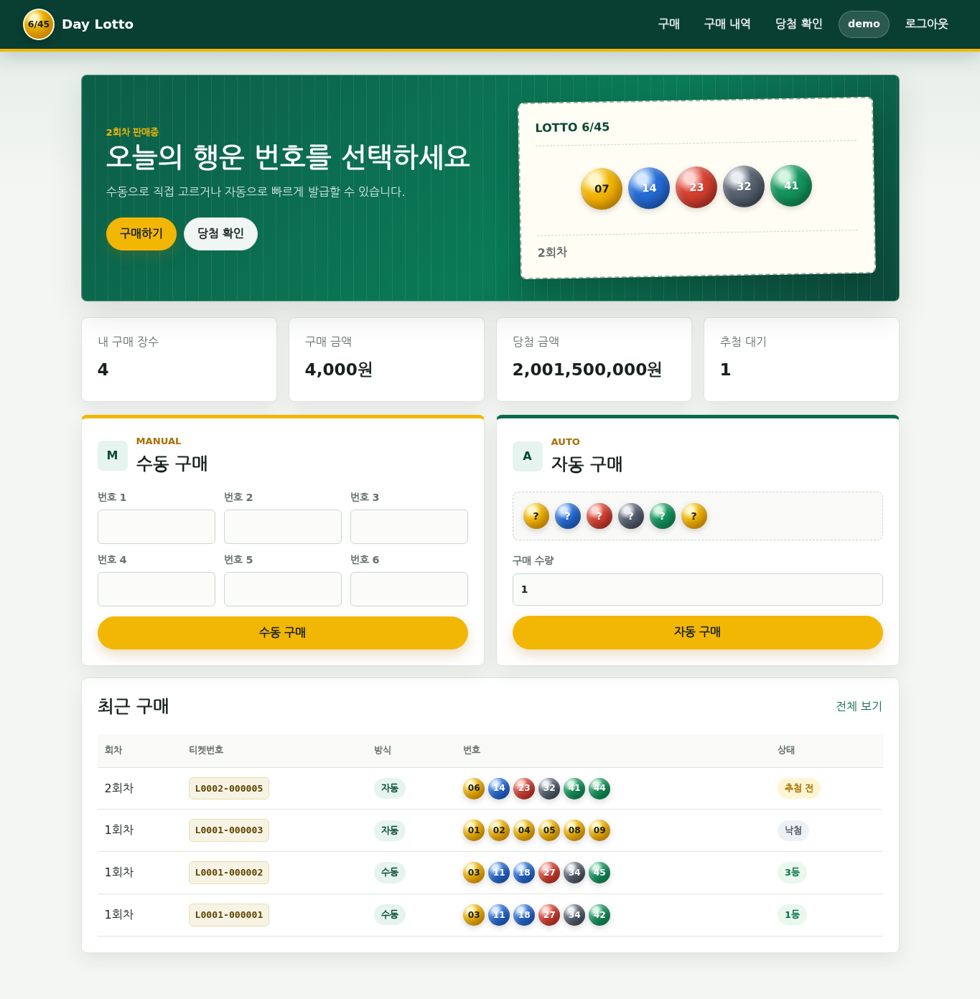
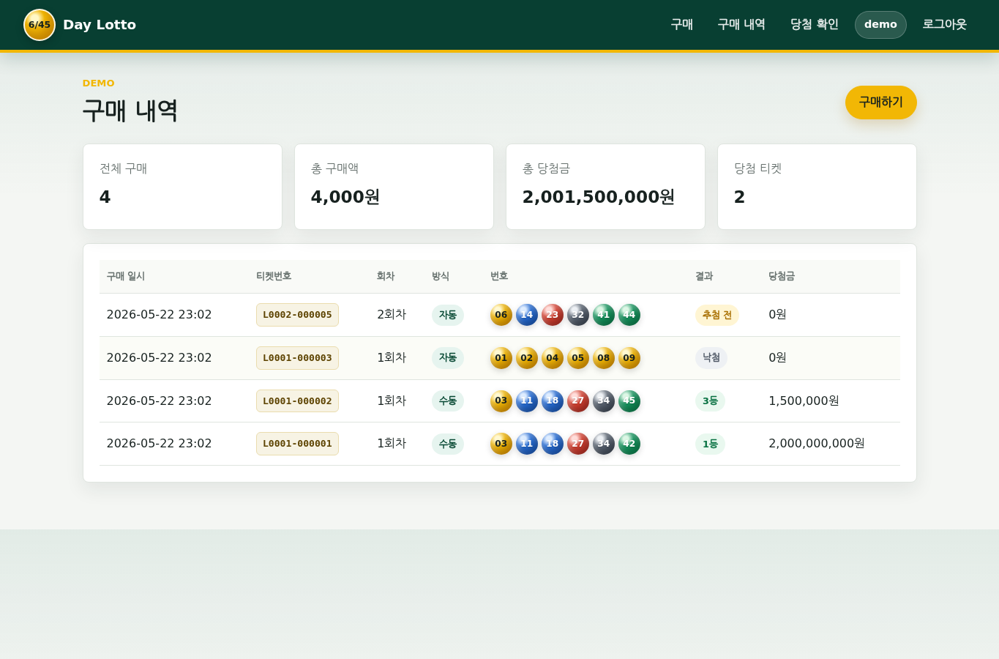
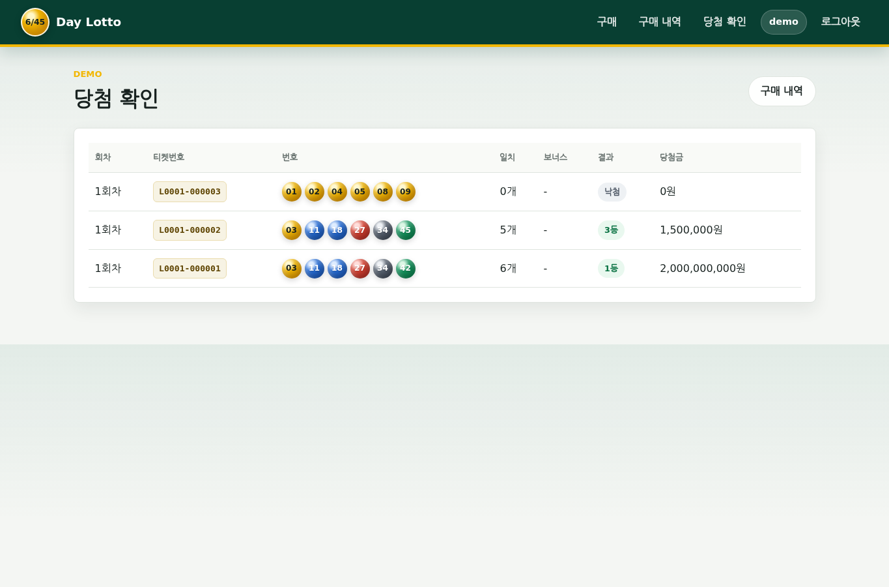
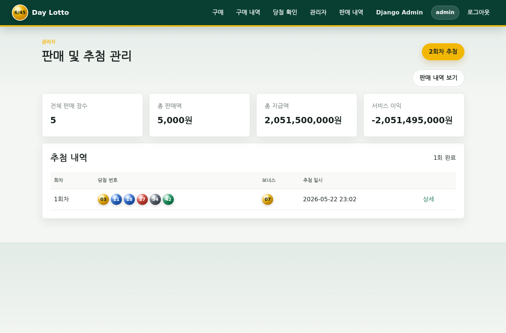
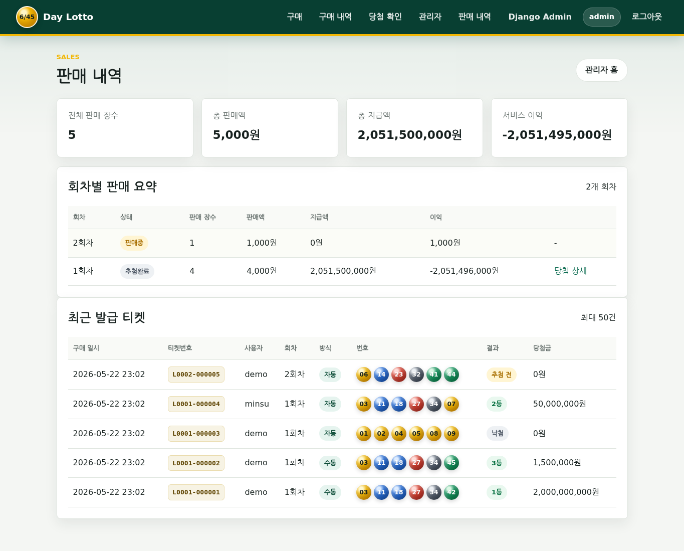
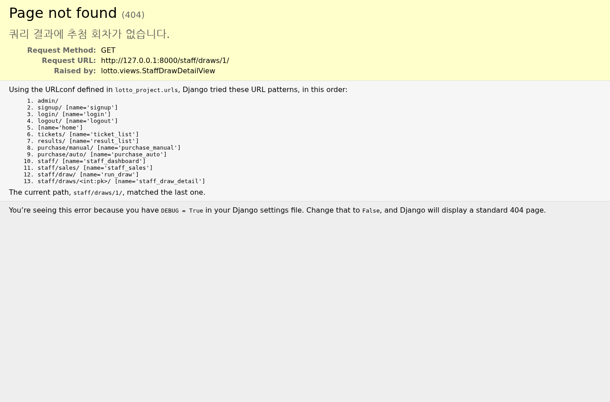

본 프로젝트는 Django와 Docker를 사용하여 구현한 6/45 로또 웹 사이트이다. 일반 사용자는 회원가입과 로그인 후 수동 또는 자동으로 로또를 구매할 수 있고, 추첨 완료 후 본인의 당첨 여부를 확인할 수 있다. 관리자는 판매 현황, 판매 내역, 추첨 기능, 회차별 당첨자 수, 판매액, 지급액, 이익을 확인할 수 있다.
소스 코드는 다음 GitHub 저장소에 업로드했다.
https://github.com/iamdbstjd/OS_LOTTO
L0001-000001 형식의 고유 티켓번호 부여서비스는 Docker multi-container 구조로 구성했다.
web: Django 애플리케이션 컨테이너db: PostgreSQL 데이터베이스 컨테이너postgres_data: DB 데이터를 유지하는 Docker volumeBrowser
|
v
web container
Django views / forms / services / templates
|
v
db container
PostgreSQL
Django 애플리케이션은 화면 출력, 로그인 세션, 구매 처리, 추첨 처리, 당첨 계산을 담당한다. PostgreSQL 컨테이너는 사용자, 회차, 티켓, 당첨 결과 데이터를 저장한다.
로컬 테스트 편의를 위해 DB_HOST 환경 변수가 없으면 SQLite를 사용하고, Docker Compose 실행 시에는 DB_HOST=db가 설정되어 PostgreSQL을 사용한다.
Draw 모델은 로또 회차를 나타낸다.
round_number: 회차 번호status: 판매중 또는 추첨완료winning_numbers: 당첨 번호 6개bonus_number: 보너스 번호drawn_at: 추첨 일시Ticket 모델은 사용자가 구매한 로또 티켓을 나타낸다.
user: 구매 사용자draw: 구매한 회차ticket_code: 구매 건을 추적하기 위한 고유 티켓번호numbers: 구매 번호 6개purchase_type: 수동 또는 자동price: 구매 금액match_count: 당첨 번호와 일치한 개수matched_bonus: 보너스 번호 일치 여부prize_rank: 당첨 등수prize_amount: 당첨금실제 로또 규칙을 기준으로 등수를 계산했다.
| 등수 | 조건 |
|---|---|
| 1등 | 당첨 번호 6개 일치 |
| 2등 | 당첨 번호 5개 + 보너스 번호 일치 |
| 3등 | 당첨 번호 5개 일치 |
| 4등 | 당첨 번호 4개 일치 |
| 5등 | 당첨 번호 3개 일치 |
당첨금은 과제 시연과 이익 계산을 단순하게 하기 위해 고정 금액으로 설정했다.
| 등수 | 당첨금 |
|---|---|
| 1등 | 2,000,000,000원 |
| 2등 | 50,000,000원 |
| 3등 | 1,500,000원 |
| 4등 | 50,000원 |
| 5등 | 5,000원 |
서비스 이익은 다음 공식으로 계산했다.
서비스 이익 = 총 판매액 - 총 지급액
아래 화면은 제출 보고서 설명을 위해 데모 데이터로 캡처했다.

로그인 화면에서는 기존 사용자가 아이디와 비밀번호를 입력해 서비스에 접속한다.
로그인 버튼 클릭: 입력한 계정 정보를 Django 인증 시스템으로 검증한다.회원가입 링크 클릭: 회원가입 화면으로 이동한다.
회원가입 화면에서는 신규 사용자가 아이디, 이메일, 비밀번호를 입력한다.
가입하기 버튼 클릭: Django UserCreationForm 기반으로 사용자를 생성한다.
사용자 메인 화면은 현재 판매중인 회차, 사용자 구매 요약, 수동 구매, 자동 구매, 최근 구매 내역을 보여준다.
구매하기 버튼 클릭: 화면 아래 구매 영역으로 이동한다.당첨 확인 버튼 클릭: 당첨 확인 페이지로 이동한다.수동 구매 영역:수동 구매 버튼 클릭 시 번호 6개가 저장된다.자동 구매 영역:자동 구매 버튼 클릭 시 시스템이 중복 없는 번호 6개를 자동 생성한다.
구매 내역 화면은 로그인한 사용자 본인의 티켓만 표시한다.
구매하기 버튼 클릭: 구매 메인 화면으로 돌아간다.
당첨 확인 화면은 추첨이 완료된 회차의 티켓만 보여준다.
구매 내역 버튼 클릭: 전체 구매 내역 화면으로 이동한다.
관리자 대시보드는 전체 판매 현황과 추첨 기능을 제공한다.
2회차 추첨 버튼 클릭:판매 내역 보기 버튼 클릭: 관리자 판매 내역 화면으로 이동한다.상세를 클릭하면 해당 회차의 당첨 상세 화면으로 이동한다.
판매 내역 화면은 관리자 전용 화면이며 회차별 판매 요약과 최근 발급 티켓을 보여준다.
당첨 상세 링크를 클릭하면 회차별 당첨 상세 화면으로 이동한다.
관리자 당첨 상세 화면은 특정 회차의 추첨 결과와 구매자별 결과를 보여준다.
Django 프로젝트 lotto_project와 앱 lotto를 생성하고, 사용자 화면과 관리자 화면을 위한 URL, view, form, template 구조를 구성했다.
Django 기본 인증 시스템을 사용하여 회원가입, 로그인, 로그아웃을 구현했다. 로그인한 사용자만 구매, 구매 내역, 당첨 확인 페이지에 접근할 수 있다. 관리자 기능은 is_staff 권한을 가진 사용자만 접근할 수 있다.
수동 구매는 ManualTicketForm에서 6개 번호를 입력받고, 중복 여부와 1~45 범위를 검증한다. 자동 구매는 random.sample을 사용해 중복 없는 번호 6개를 생성한다.
티켓 저장 시 L0001-000001 형식의 고유 티켓번호를 자동 발급하여 사용자와 관리자가 동일한 구매 건을 쉽게 확인할 수 있도록 했다.
관리자가 추첨 버튼을 누르면 현재 판매중인 회차의 당첨 번호 6개와 보너스 번호가 생성된다. 이후 해당 회차의 모든 티켓을 평가하여 일치 개수, 보너스 일치 여부, 등수, 당첨금을 저장한다. 추첨 완료 후 다음 회차를 자동 생성한다.
사용자 화면에는 본인의 전체 구매 장수, 구매 금액, 당첨 금액, 추첨 대기 건수를 표시했다. 관리자 화면에는 전체 요약뿐 아니라 회차별 판매 요약과 최근 발급 티켓 목록을 제공하여 판매 내역 확인 요구사항을 명확하게 충족하도록 했다.
docker-compose.yml에 Django web 서비스와 PostgreSQL db 서비스를 정의했다. db 서비스에는 healthcheck를 추가하여 DB 준비가 끝난 뒤 Django 마이그레이션과 서버 실행이 진행되도록 했다.
Docker 환경에서 다음 명령을 실행한다.
docker compose up --build
웹 브라우저에서 다음 주소로 접속한다.
http://localhost:8000
관리자 기능을 사용하려면 다음 명령으로 관리자 계정을 생성한다.
docker compose exec web python manage.py createsuperuser
다음 테스트를 작성했다.
실행한 검증 명령은 다음과 같다.
docker compose config
conda run -n bys python manage.py check
conda run -n bys python manage.py test
검증 결과는 다음과 같다.
System check identified no issues (0 silenced).
Ran 12 tests in 6.013s
OK
docker compose config 명령으로 docker-compose.yml 문법과 서비스 구성을 확인했다.
본 프로젝트 작성 과정에서 AI 도구를 사용했다.
DJANGO_SECRET_KEY, DJANGO_DEBUG, DJANGO_ALLOWED_HOSTS를 안전하게 변경해야 한다.본 프로젝트는 MIT License를 사용한다.